Buildings 195
Sort
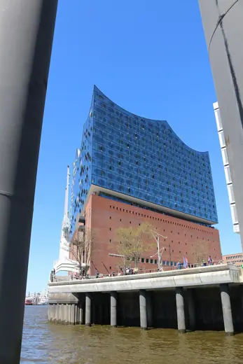
Elbphilharmonie2017 · Hamburg Reichstag1999 · Berlin
Reichstag1999 · Berlin Kolumba Museum2007 · Cologne
Kolumba Museum2007 · Cologne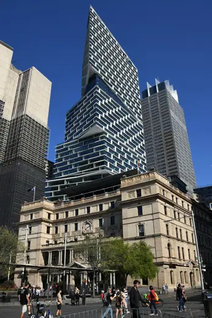
Quay Quarter Tower2022 · Sydney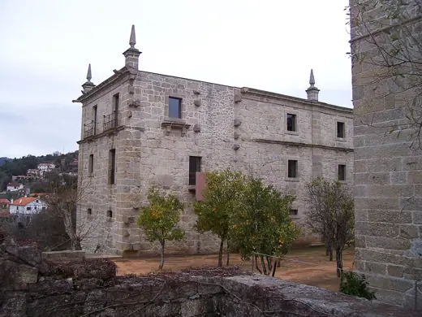
Pousada Santa Maria do Bouro1997 · Amares Centro Cultural Gabriela Mistral2010 · Santiago
Centro Cultural Gabriela Mistral2010 · Santiago CaixaForum Madrid2008 · Madrid
CaixaForum Madrid2008 · Madrid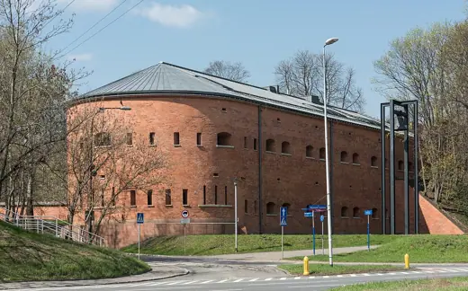
Katyń Museum2015 · Warsaw La Fábrica1975 · Sant Just Desvern
La Fábrica1975 · Sant Just Desvern Patan Museum1997 · Lalitpur
Patan Museum1997 · Lalitpur High Line2009 · New York
High Line2009 · New York Contemporary Jewish Museum2008 · San Francisco
Contemporary Jewish Museum2008 · San Francisco Pinacoteca do Estado de São Paulo1998 · São Paulo
Pinacoteca do Estado de São Paulo1998 · São Paulo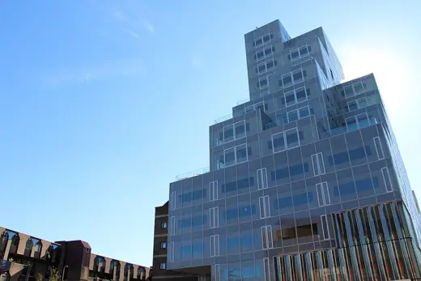
Timmerhuis2015 · Rotterdam Design Museum2016 · London
Design Museum2016 · London SESC Pompéia1986 · São Paulo
SESC Pompéia1986 · São Paulo Lenbachhaus extension2013 · Munich
Lenbachhaus extension2013 · Munich Art Gallery of Ontario2008 · Toronto
Art Gallery of Ontario2008 · Toronto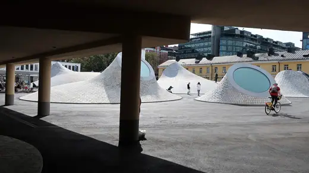
Amos Rex2018 · Helsinki Jim Thompson House1959 · Bangkok
Jim Thompson House1959 · Bangkok Weston Library1940 · Oxford
Weston Library1940 · Oxford Danish Jewish Museum2004 · Copenhagen
Danish Jewish Museum2004 · Copenhagen Tabakfabrik Linz1935 · Linz
Tabakfabrik Linz1935 · Linz Tate Modern2000 · London
Tate Modern2000 · London London Bridge Station2018 · London
London Bridge Station2018 · London Tai Kwun2018 · Hong Kong
Tai Kwun2018 · Hong Kong Gehry Residence1978 · Santa Monica
Gehry Residence1978 · Santa Monica Recoleta Cultural Center1980 · Buenos Aires
Recoleta Cultural Center1980 · Buenos Aires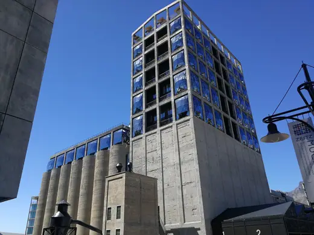
Zeitz MOCAA2017 · Cape Town Military History Museum2011 · Dresden
Military History Museum2011 · Dresden Garage Museum of Contemporary Art2015 · Moscow
Garage Museum of Contemporary Art2015 · Moscow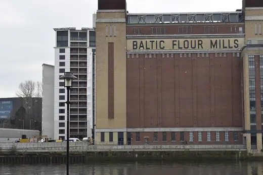
Baltic Centre for Contemporary Art2002 · Gateshead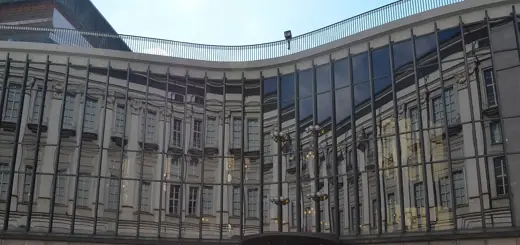
Teatro Regio1973 · Turin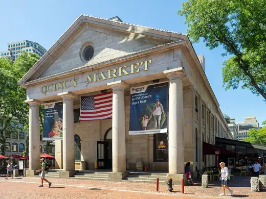
Faneuil Hall Marketplace (Quincy Market)1976 · Boston CaixaForum Barcelona2002 · Barcelona
CaixaForum Barcelona2002 · Barcelona Cartagena Roman Theatre Museum2008 · Cartagena
Cartagena Roman Theatre Museum2008 · Cartagena Castelvecchio Museum1975 · Verona
Castelvecchio Museum1975 · Verona Danish Maritime Museum2013 · Helsingor
Danish Maritime Museum2013 · Helsingor Fondazione Prada2015 · Milan
Fondazione Prada2015 · Milan European Central Bank2014 · Frankfurt
European Central Bank2014 · Frankfurt Port House2016 · Antwerp
Port House2016 · Antwerp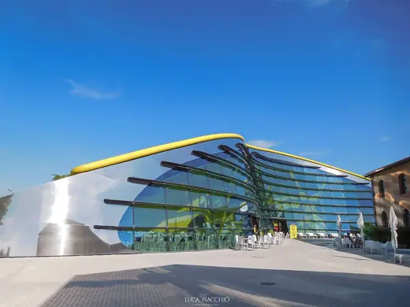
Museo Enzo Ferrari2012 · Modena SESC 24 de Maio2017 · São Paulo
SESC 24 de Maio2017 · São Paulo GES-2 House of Culture2021 · Moscow
GES-2 House of Culture2021 · Moscow Hamburger Bahnhof1996 · Berlin
Hamburger Bahnhof1996 · Berlin Toni-Areal2014 · Zurich
Toni-Areal2014 · Zurich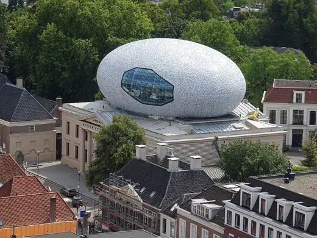
Museum de Fundatie2013 · Zwolle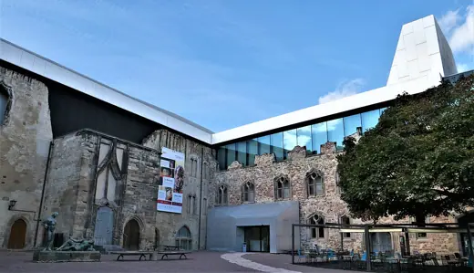
Kunstmuseum Moritzburg extension2008 · Halle